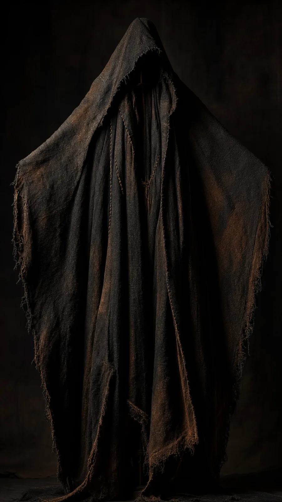

Vârcolac Atelier
Draped Mantle
Garment
From €560

Details
- Material
- Washed linen, dyed twice: black over rust
- Edition
- 2 of 5
- Size
- Made to your measureCut to your height and shoulders. You give both when you write to the maker.
- Lead time
- About six weeks after you accept the quote
- Hood
- Deep, falling past the brow
- Seams
- Sewn by hand in waxed thread, left in view
- Care
- Wash cold by hand; in time the black wears back to rust